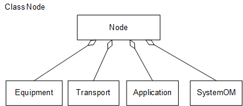

This section describes the functions and concepts of Nodes.
It also illustrates managed object models (MOMs) and describes the
corresponding managed objects (MOs).
Functions and Concepts
The Node MOM includes
the following subobject models:
- Equipment subobject model, whose top-level object is Equipment.
- Transmission resource subobject model, whose top-level object
is Transport.
- Application subobject model. The Application MO
defines application instances provided for GSM/UMTS/LTE services at
a runtime.
- System-level management subobject model, whose top-level object
is SystemOM.
Managed Object Model
Figure 1 shows the Node MOM, including MOs related to the Node MO.
Figure 1 Node MOM

The MOs in the Node MOM are described as follows:
- Node defines a root
node of management functions for common resources.
- Equipment defines
an equipment root object, which manages equipment-class MOs.
- Transport defines
a transport layer management object, which manages commands related
to the transport layer.
- Application defines
an application providing operating environment for a certain function.
If a base station needs to provide functions of a specific mode, an
application of the corresponding mode must be added. For example,
if a base station needs to provide the LTE access function during
mode transition, an eNodeB application must be added to the base station.
- SystemOM is a major
MO for configuring system-level management functions.
Copyright © Huawei Technologies Co., Ltd.